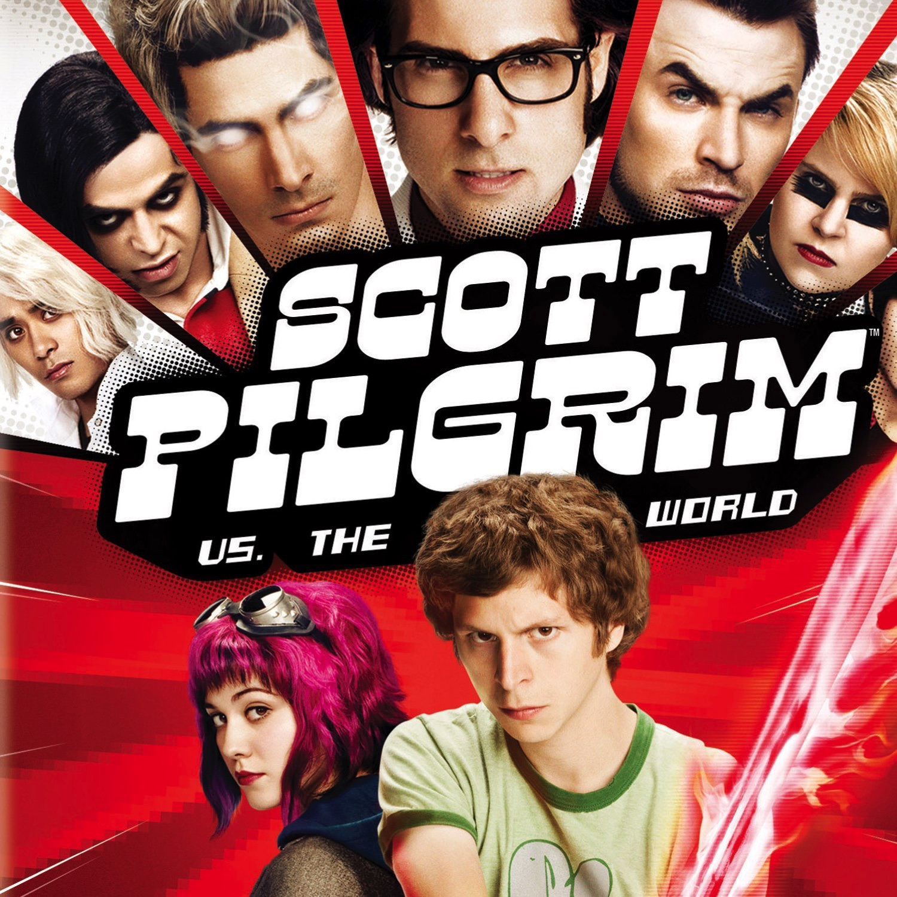
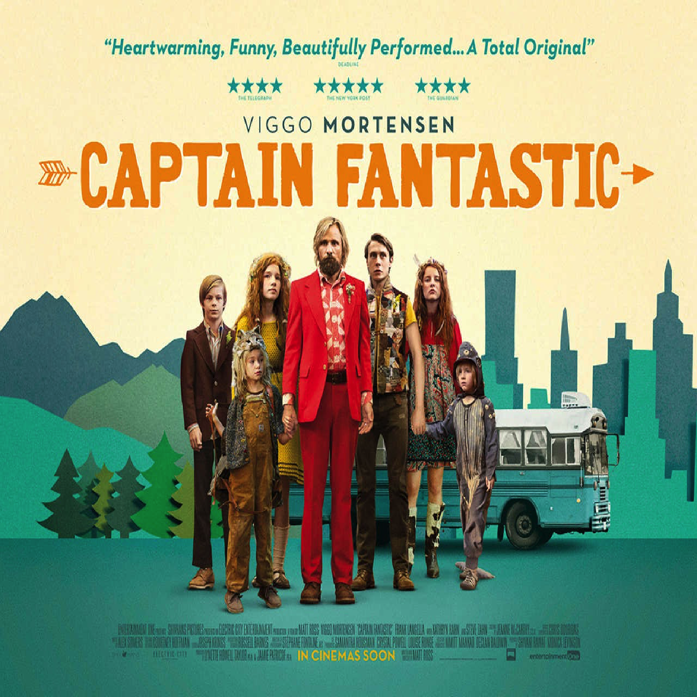
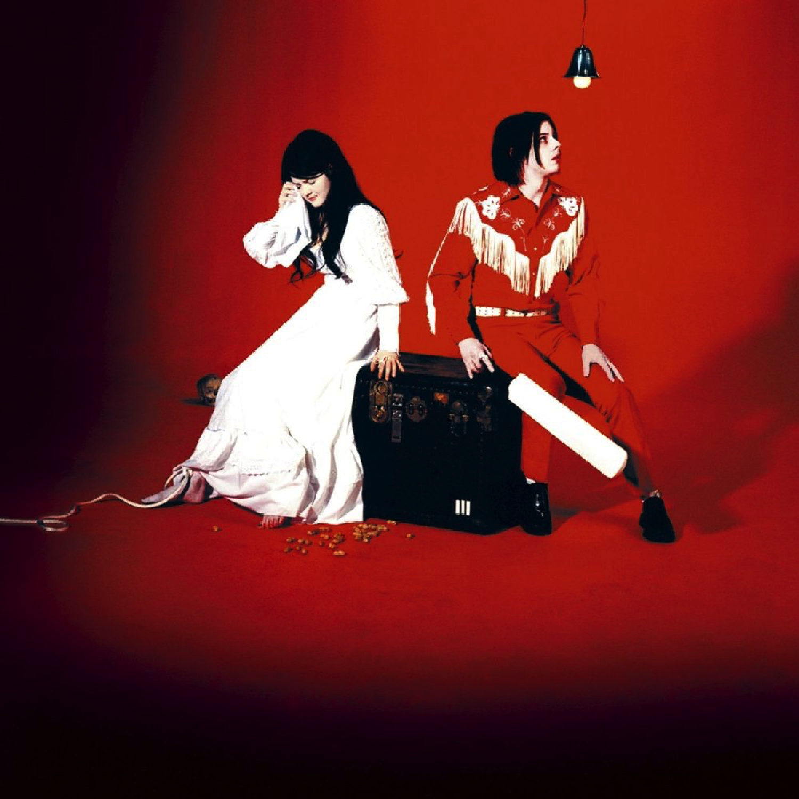
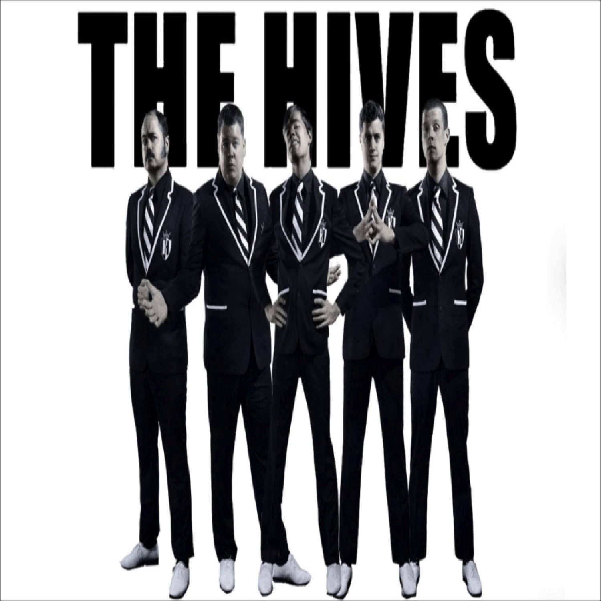

Diogo Heinen
Student @Le Wagon
Animator and graphic designer, i'm learning code and i'm lovin'it!
My Favorites Movies
|  |
2010 - Scott Pilgrim VS the worldScott Pilgrim vs. the World is a 2010 comedy film co-written, produced and directed by Edgar Wright, based on the graphic novel series Scott Pilgrim by Bryan Lee O'Malley. It stars Michael Cera as Scott Pilgrim, a slacker musician who must battle his girlfriend Ramona's seven evil exes. |

|
2006 - The DepartedThe Departed is a 2006 American crime drama film directed by Martin Scorsese and written by William Monahan. It is a remake of the 2002 Hong Kong film Infernal Affairs.[2] The film stars Leonardo DiCaprio, Matt Damon, Jack Nicholson, and Mark Wahlberg, with Martin Sheen, Ray Winstone, Vera Farmiga, Anthony Anderson and Alec Baldwin in supporting roles. |
|  |
2016 - Captain FantasticCaptain Fantastic is a 2016 American comedy-drama film written and directed by Matt Ross and starring Viggo Mortensen. The story centers on a family that is forced by circumstances to reintegrate into society after living in isolation for a decade. |
My Favorites Bands
Blood Red ShoesBlood Red Shoes are an alternative rock duo from Brighton, England consisting of Laura-Mary Carter and Steven Ansell. They have released four full-length albums, Box of Secrets (2008), Fire Like This (2010), In Time to Voices (2012), and Blood Red Shoes (2014) as well as several EPs and a number of singles.[1] In 2014, they founded their own label, Jazz Life. |
|
|  |
The White StripesThe White Stripes were an American rock duo formed in 1997 in Detroit, Michigan. The group consisted of Jack White (songwriter, vocals, guitar, piano, and mandolin) and Meg White (drums and vocals) |
|  |
The HivesThe Hives are a Swedish rock band that rose to prominence in the early 2000s during the garage rock revival. Their mainstream success came with the release of the album Veni Vidi Vicious, containing the anthem "Hate to Say I Told You So". The band have been acclaimed by music critics as one of the best live rock bands in current music. |